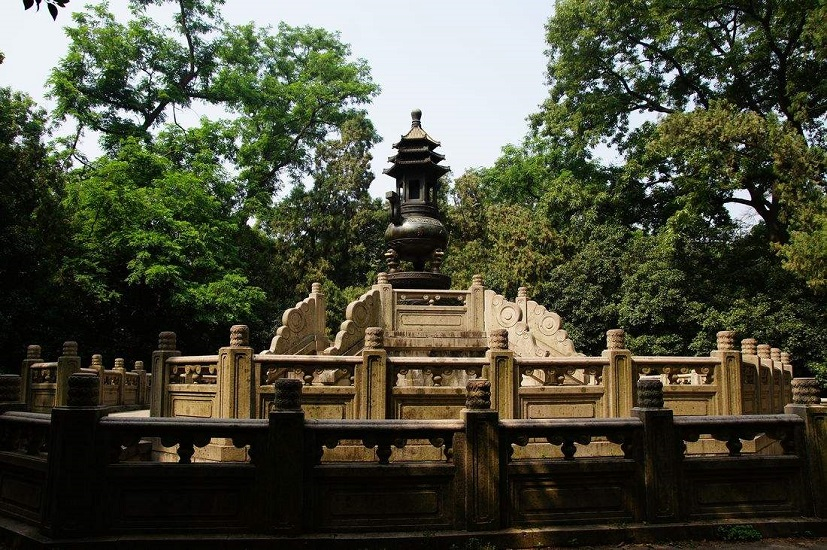

南京红山森林动物园
南京市红山森林动物园位于南京市玄武区和燕路，是国家AAAA级旅游景区。园区总面积68公顷。园内山峦叠嶂，绿化覆盖率达85%，展示着世界各地珍稀动物216种 2600余只。红山森林动物园以独特的森林景观、丰富的动物资源......
玄武湖
玄武湖，位于南京市玄武区，东枕紫金山，西靠明城墙，北邻南京站，是江南地区最大的城内公园，也是中国最大的皇家园林湖泊、仅存的江南皇家园林，被誉为“金陵明珠”，现为国家重点公园、国家AAAA级旅游景区......
秦淮河
秦淮河，中国长江下游右岸支流。古称龙藏浦，汉代起称淮水，唐以后改称秦淮。 [1] 秦淮河有南北两源，北源句容河发源于句容市宝华山南麓，南源溧水河发源于南京市溧水区东庐山，两河在南京市江宁区方山埭西北村汇合成秦淮河干流，绕过方山向西北至外城城门上坊门从东水关流入南京城，由东向西横贯市区，南部从西水关流出，注入长江......
南京博物馆
南京博物院位于南京市玄武区中山东路321号，是中国三大博物馆之一，简称南院或南博，其前身是民国二十二年（1933年）蔡元培等倡建的国立中央博物院，是中国创建最早的博物馆、中国第一座由国家投资兴建的大型综合类博物馆。现为大型综合性的国家级博物馆、国家一级博物馆、首批中央地方共建国家级博物馆、国家AAAA级旅游景区......

老门东
老门东位于南京市秦淮区中华门以东，因地处南京京城南门（即中华门）以东，故称“门东”，与老门西相对，是南京夫子庙秦淮风光带的重要组成部分。门东是南京传统民居聚集地，自古就是江南商贾云集、人文荟萃、世家大族居住之地。门东是个广泛的概念，中华门以东均为门东，如今的老门东历史文化街区是狭义的门东概念......
雨花台风景区
雨花台风景区又名雨花台风景名胜区，简称雨花台。雨花台是新民主主义革命的纪念圣地，建有纪念性陵园。位于南京市雨花台区中华门外1公里处，面积为153.7公顷，绿地覆盖率达90%以上。是以自然山林为依托，以红色旅游为主体，融和自然风光和人文景观为一体的全国独具特色的纪念性风景名胜区，春秋两季适宜游玩......

阅江楼
阅江楼位于南京市鼓楼区狮子山巅，屹立在扬子江畔，饮霞吞雾，是中国十大文化名楼之一，也是江南四大名楼之一，有“江南第一楼”之称。
阅江楼喻阅江揽胜之意，楼高五十二米多，外四层暗三层，共七层，碧瓦朱楹、檐牙摩空、朱帘凤飞、彤扉彩盈，具有鲜明的古典的皇家气派，为典型的明代皇家建筑风格。总建筑面积五千余平方米......

钟山风景区
钟山风景名胜区位于南京市玄武区紫金山，简称钟山风景区，是中国著名的风景游览胜地、首批国家级风景名胜区、首批国家5A级旅游景区、国家森林公园、国家文明风景名胜区、中国旅游胜地四十佳。
钟山风景区以中山陵园为中心，明孝陵和灵谷寺为依托，分布各类名胜古迹多达200多处，84个可供游览景点。其中世界文化遗产1处......
栖霞山
栖霞山位于南京市栖霞区，古称摄山，被誉为“金陵第一明秀山”，南朝时山中建有“栖霞精舍”，因此得名，是国家AAAA级旅游景区、中国四大赏枫胜地之一。历史上曾有五王十四帝登临栖霞山，其中乾隆六下江南，五次驻跸栖霞山。
栖霞山素有“六朝胜迹”之称，在明代被列为“金陵四十八景”之一，有“一座栖霞山，半部金陵史”的美誉......